о животных
жирафы
Жираф - Млекопитающее из отряда парнокопытных, семейства жирафовых. Является самым высоким наземным животным планеты
Самцы жирафа достигают высоты до 5,5—6,1 м (около 1/3 длины составляет шея) и весят до 900—1200 кг. Самки, как правило, немного меньше и легче
Шея у жирафов необычайно длинная, и это несмотря на то, что у них, как и почти у всех других млекопитающих, лишь семь шейных позвонков. Высокий рост увеличивает нагрузку на систему кровообращения, прежде всего в отношении кровоснабжения головного мозга. Поэтому сердце у жирафов особенно сильное. Оно пропускает 60 л крови в минуту, весит 12 кг и создаёт давление, которое в три раза выше, чем у человека. Тем не менее оно не смогло бы вынести перегрузки при резком опускании и поднятии головы жирафа. Чтобы такие движения не приводили к гибели животного, кровь жирафа гуще, чем у человека, и имеет вдвое более высокую плотность кровяных телец. Помимо этого, у жирафа имеются особые запирающие клапаны в большой шейной вене, прерывающие поток крови таким образом, что сохраняется давление в главной артерии, снабжающей мозг
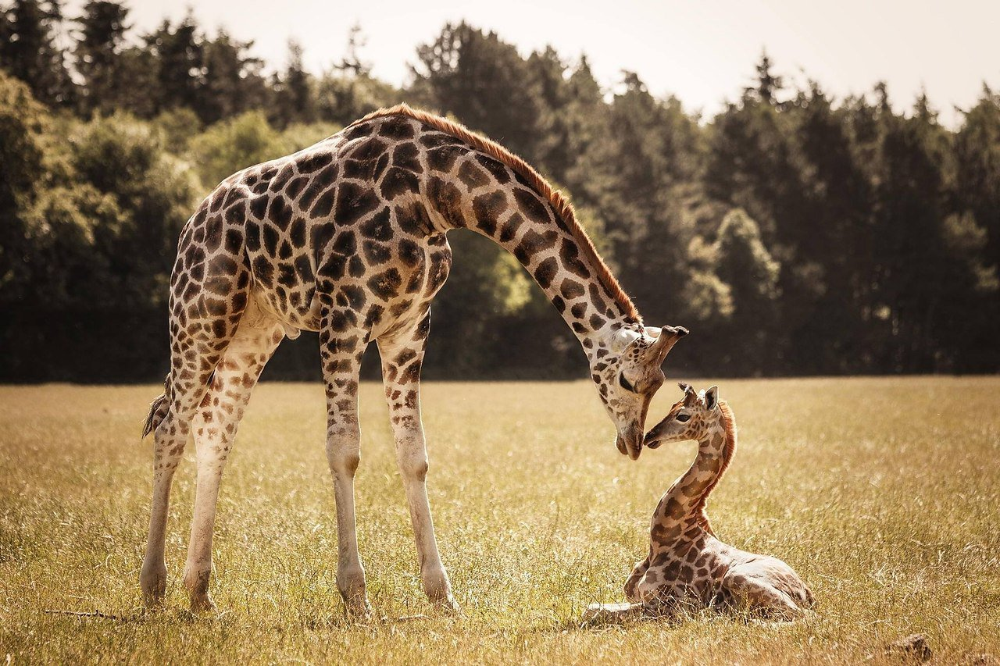 жирафслон
Слоны — самые крупные наземные животные на Земле. Обитают они в Юго-Восточной Азии и Африке в тропических лесах и саваннах.
В центре стопы слона есть жировая подушка, которая каждый раз, когда слон опускает ногу, «расплющивается», увеличивая площадь опоры. На верхней челюсти у слонов есть бивни — видоизменённые резцы, растущие в течение всей жизни животного. Обычно слоны либо имеют два бивня, либо не имеют их вообще (у африканских слонов бивни имеют и самцы и самки, у индийских — только самцы). С помощью бивней они обдирают кору с деревьев и рыхлят землю в поисках соли, а также наносят раны хищникам.
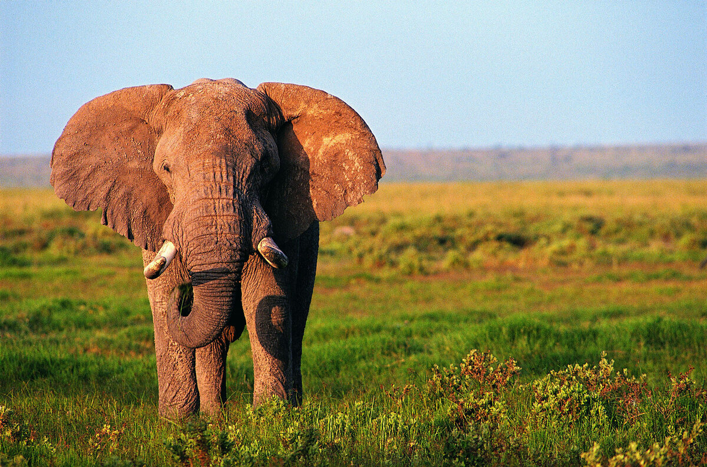 слоныигуаны
Обыкновенная игуана была научно описана шведским врачом и натуралистом Карлом Линнеем в 1758 году в десятом издании его «Системы природы». В последующие годы было выделено ещё не менее 17 видов и подвидов, относящихся к обыкновенной игуане, однако все они, за исключением карибской зелёной игуаны, были признаны недействительными.
Самый крупный представитель семейства: взрослые особи, как правило, вырастают до 1,2-1,7 м в длину от головы до кончика хвоста. Однако, нужно учитывать, что большую часть этой длины занимает хвост, а длина от кончика носа до клоаки у большинства взрослых игуан обычно составляет от 30 до 42 см. В среднем взрослый самец обыкновенной игуаны имеет массу около 4 кг, в то время как взрослые самки, как правило, весят от 1,2 до 3 кг. Некоторые крупные самцы в лесах Южной Америки могут достигать длины 2 м при массе в 6-8 кг. Как сообщается, некоторые игуаны могут достичь веса и в 9.1 кг. Наоборот, на полузасушливых островах типа Кюрасао размер ящериц обычно на 30 % меньше, чем у животных, обитающих на материке. При рождении длина детёнышей варьируется в пределах от 17 до 25 см при весе около 12 г. Несмотря на своё название, окрас игуаны не обязательно зелёный и во многом зависит от возраста и района обитания. На юге ареала, как, например, в Перу, игуаны выглядят голубоватыми с чёрными пятнами. На островах Бонайре, Кюрасао, Аруба и Гренада их цвет варьируется от зелёного до бледно-лилового, чёрного и даже розового. На западе Коста-Рики обыкновенные игуаны выглядят красными, а в более северных регионах, как, например, в Мексике, оранжевыми. В Сальвадоре молодые особи часто выглядят ярко-синими, однако их окрас значительно изменяется, когда ящерицы становятся старше.
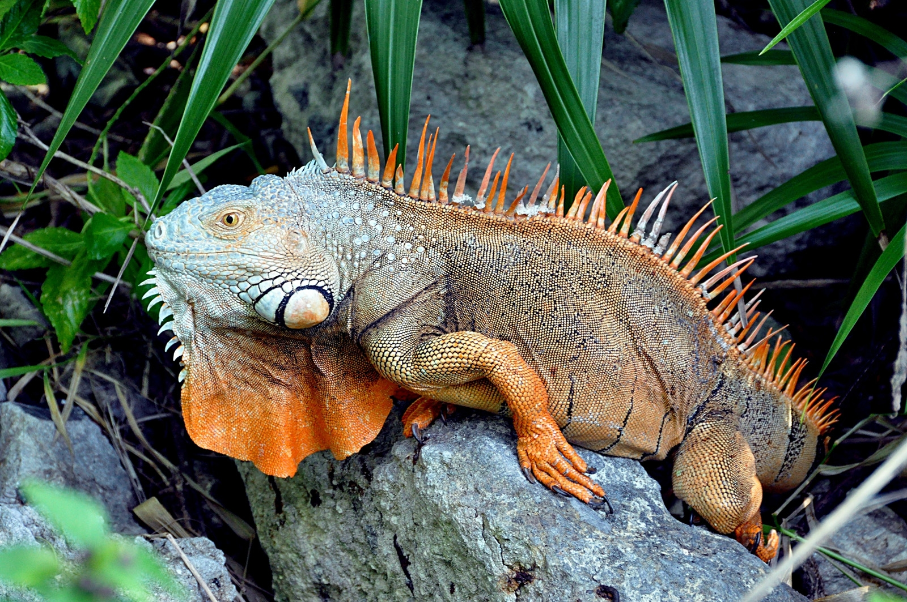 игуанызмеи
Тело удлинённое, без конечностей. Длина тела от 10 см до почти 7 метров. От безногих ящериц змеи отличаются подвижным соединением левой и правой частей челюстей (что даёт возможность заглатывать добычу целиком), отсутствием подвижных век, барабанной перепонки и плечевого пояса.
Тело змеи покрыто чешуйчатой кожей. Вопреки расхожему мнению (из-за возможной путаницы змей с червями) змеиная кожа сухая, а не влажная и слизистая. У большинства видов змей кожа со стороны живота особая и приспособлена для большего сцепления с поверхностью, облегчая перемещение. Веки змеи представлены прозрачными чешуйками и остаются постоянно закрытыми. Смена кожного покрова змеи называется шелушением или линькой. У змей кожа меняется одномоментно и одним слоем[9]. Несмотря на кажущуюся неоднородность, кожный покров змеи не является дискретным, и слущивание верхнего слоя кожи — эпидермиса — в процессе линьки напоминает выворачивание чулка наизнанку[10]. Форма и количество чешуек на голове, спине и животе зачастую является характерным для данного вида и используется в процессе идентификации в таксономических целях. Чешуйки называют главным образом в соответствии с их расположением на теле. У более развитых («продвинутых») змей (Caenophidia) широкие полосы ряда спинных чешуек соответствуют позвонкам, что позволяет сосчитать позвонки змеи без вскрытия. Глаза змеи покрывают специальные прозрачные чешуйки (Brille) — неподвижные веки. Таким образом, их глаза фактически всегда остаются открытыми, даже во время сна. Однако они могут быть прикрыты кольцами тела.
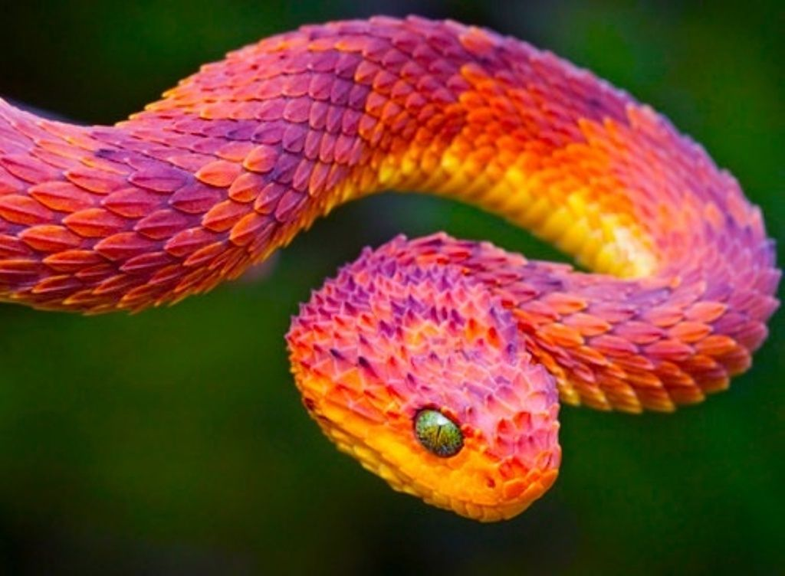 змеикрокодилы
Крокоди́лы (лат. Crocodilia) — отряд вторично-водных животных класса пресмыкающихся из клады эузухий, которая в свою очередь вместе со множеством промежуточных клад относится к кладе круротарзы или псевдозухии. Из ныне живущих организмов ближайшие родственники крокодилов — птицы, потомки сестринской ветви архозавров. Хотя словом «крокодил» правильнее всего обозначать представителей семейства настоящих крокодилов, в целом этот термин употребим для обозначения любых представителей отряда, к которому также относятся аллигаторовые (аллигаторы и кайманы), гавиаловые и некоторые базальные его представители. Нередко «крокодилами» называют любых крокодиломорфов (Crocodylomorpha), что является ошибкой на фоне современной систематике данной группы рептилий. В современном объеме данной систематической группы, крокодилы впервые появились 83,5 млн лет назад в позднем меловом периоде. Современный отряд включает в себя не менее 15 видов настоящих крокодилов (семейство Crocodylidae), 8 видов аллигаторовых (семейство Alligatoridae) и 2 вида гавиаловых (семейство Gavialidae, иногда упраздняемое до подсемейства в составе семейства настоящих крокодилов[1][2]). Крокодилы имеют крупное, плотное, ящероподобное тело, вытянутую и приплюснутую морду, сжатые с боков хвосты, и глаза, уши и ноздри, располагающиеся на верхней части головы. Они хорошо плавают и могут достаточно быстро передвигаться по земле. Их кожа очень толстая и покрыта непересекающимися чешуями. Большинство современных крокодилов имеют сложный зубной ряд из зубов, отличающихся по формам размерам и функциям (гетеродонтизм), а также объёмные челюстные мышцы, обеспечивающие большую силу укуса. Но некоторые виды имеют отличительные краниальные адаптации в силу особенностей питания: наглядным примером являются узкие челюсти и практически гомодонтная зубная система гавиалов.
Крокодилы имеют четырехкамерное сердце с полной межжелудочковой перегородкой и, подобно птицам, однонаправленный цикл системы воздушного потока в лёгких. Однако, при этом крокодилы являются холоднокровными животными и их кровеносная система сохраняет возможность смешивания артериальной и венозной крови за счет наличия паницциева отверстия между левой и правой дугами аорты. В настоящее время считается, что холоднокровность является вторично приобретённым признаком этой группы, поскольку предки крокодилов, как и другие развитые архозавры, имели повышенный в сравнении с современными рептилиями уровень обмена веществ и скорее всего были теплокровными. Таким образом, такие признаки, как способность держать конечности относительно прямо под туловищем, четырёхкамерное сердце и более развитая, чем у большинства других современных пресмыкающихся, дыхательная система, являются не прогрессивными признаками крокодилов, а упрощением организации относительно предкового состояния.
Крокодилы встречаются в основном в тропических низинах, но аллигаторы обитают в более холодных регионах на юго-востоке США и в реке Янцзы в Китае. Все нынешние крокодилы — специализированные полуводные хищники, использующие в пищу широкий спектр водных, околоводных и приходящих на водопой животных. Некоторые виды, такие как гангский гавиал, имеют довольно узкий спектр питания. Крокодилы, как правило, одиночные и территориальные животные, хотя многие виды в целом терпимы к своим сородичам. Во время размножения доминирующие самцы всегда придерживаются своей территории и как правило являются полигамными по отношению к самкам. Самки откладывают яйца в ямах или холмиках, и некоторое время заботятся о своих детёнышах. Крокодилы, как известно, нападают на людей и являются наиболее опасными для человека крупными хищниками. Наибольшее количество нападений происходит со стороны нильского крокодила. За ним следует гребнистый и болотный крокодилы. В Новом Свете за наибольшее число нападений ответственны острорылый крокодил и чёрный кайман. Крокодилы почитались везде, где они обитают. Художественные и литературные представления о крокодилах появились в культурах по всему миру, начиная по меньшей мере со времён Древнего Египта.
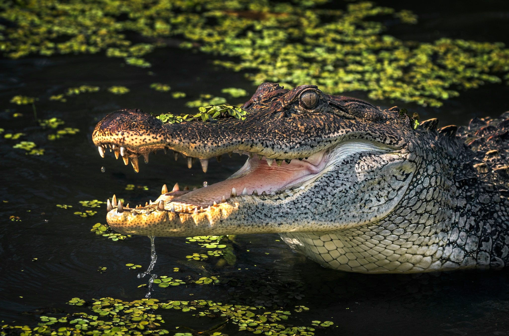 крокодилыбегемот
Бегемот — одно из крупнейших современных наземных животных. Масса крупных старых самцов иногда превышает 4 тонны, таким образом, гиппопотам конкурирует с носорогами за второе место по массе среди наземных животных после слонов. Ранее наиболее близкими родственниками бегемотов считались свиньи, однако сейчас учёные считают, что наиболее близкими их родственниками являются киты.
В настоящее время бегемот обитает только в Африке к югу от Сахары, хотя в древности (например, в античное время) он был распространён шире, обитая на территории Северной Африки (Египет, современные Марокко и Алжир), и, возможно, встречался на Ближнем Востоке, но уже к раннему Средневековью исчез из этих мест. По данным 2006 года, когда Международный союз охраны природы признал статус бегемота уязвимым, его численность на континенте оценивалась от 125 до 150 тыс. голов, при этом имея тенденцию к уменьшению. Часто это вызвано тем, что в неблагополучных странах Африки государство не в силах наладить адекватные мероприятия по борьбе с браконьерством. Туземное население добывает бегемотов в первую очередь ради мяса, поэтому во́йны и нестабильность в ряде стран континента, заставляющие голодающих людей искать пропитание, наносят катастрофический ущерб поголовью бегемотов. Огромной угрозой является разрушение среды обитания, неминуемое при росте населения Африки.
Несмотря на широкую известность бегемота, во многих отношениях это животное изучено недостаточно. Это касается как ряда черт его образа жизни и поведения, так и генетических связей с другими животными, физиологии и многого другого. Отчасти это объясняется трудностью наблюдения за бегемотами, проводящими бо́льшую часть светлого времени суток в воде. До настоящего времени плохо исследована также эволюционная история бегемота; известно, тем не менее, что в сравнительно недавнее по эволюционным меркам время в Африке одновременно обитало несколько видов бегемотовых. Помимо обыкновенного бегемота, в Африке сейчас сохранился только один вид семейства — карликовый бегемот (Choeropsis liberiensis).
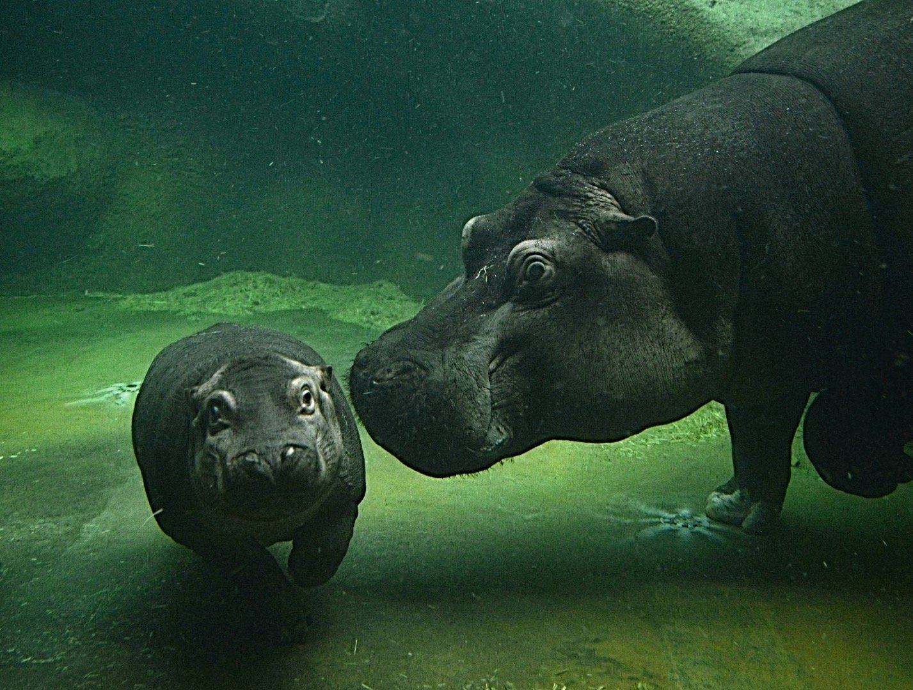 бигемотызебра
Зе́бры (лат. Hippotigris) — подрод рода лошади, включающий виды бурчеллова зебра (Equus quagga), зебра Греви (Equus grevyi) и горная зебра (Equus zebra). Гибридные формы между зебрами и домашними лошадьми называют зеброидами, между зебрами и ослами — зебрулами. Зебры живут маленькими группами, состоящими из самок с детёнышами и одного жеребца.
Зебру, в отличие от лошади, невозможно приручить, хотя одиночные случаи встречаются. По темпераменту полосатые лошадки сильно отличаются от своих одомашненных собратьев. В их арсенале имеются клыки и копыта, которыми они активно пользуются при возникновении малейшей угрозы. Не каждый хищник рискнет напасть на такую добычу. К тому же сама зебра довольно невелика, так что ездить на ней верхом было бы физически некомфортно: высота зебры в холке варьируется от 120 до 150 см, тогда как для лошади эта цифра может достигать 180 см.
По поводу фоновой окраски зебры часто встречаются две взаимоисключающие позиции: белая либо чёрная. Куратор отдела крупных млекопитающих зоопарка Атланты[en] Лиза Смит (Lisa Smith) утверждает, что специалисты чаще всего описывают зебру как чёрную лошадь в белую полоску. Несмотря на общий признак чёрно-белых полосок, все три вида зебр между собой не являются более близкими родственниками, чем по отношению к другим видам лошадиных. У вымершего подвида равнинной зебры, квагги, полоски ограничивались лишь районом шеи, в то время как некоторые другие, абсолютно неродственные виды, также проявляют склонность к образованию полосок на ногах, например, окапи.
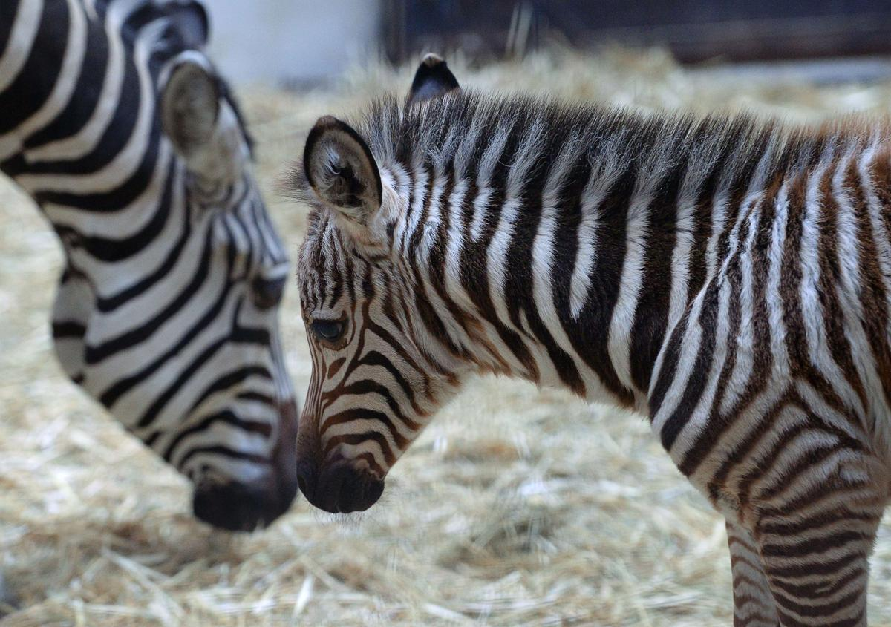 зебраящерицы
Ящерицы (лат. Lacertilia, ранее Sauria) — подотряд пресмыкающихся из отряда чешуйчатых по традиционной систематике. Подотряд ящериц не является биологически чётко определяемой категорией, а включает всех чешуйчатых, кроме змей и (традиционно) двуходок. С точки зрения кладистической классификации ящерицы — это парафилетическая группа, которая должна быть расформирована на несколько меньших монофилетических групп, либо включить в себя исключенные из нее подотряды змей и двуходок. К примеру, змеи являются потомками ящериц и генетически тесно связаны с игуанообразными и веретеницеобразными ящерицами, образуя вместе с ними общую кладу Toxicofera. Таким образом, по кладистическим принципам змеи могут считаться ящерицами, и лишь условно выделяются традиционными систематиками в отдельный подотряд. По данным базы The Reptile Database, по состоянию на июнь 2017 года известны 6332 вида ящериц.
В отличие от змей, у большинства ящериц (за исключением некоторых безногих форм) имеются в той или иной степени развитые конечности. Хотя безногие ящерицы внешне похожи на змей, у них сохраняется грудина, а у большинства — пояса конечностей; в отличие от змей, левая и правая половины челюстного аппарата неподвижно сращены. Характерным признаком подотряда является также неполное окостенение передней части мозговой коробки и не более двух крестцовых позвонков. У безногих ящериц глаза, как правило, снабжены подвижными раздельными веками, в то время как у змей веки срослись, образовав на глазах прозрачные «линзы». Также они отличаются рядом других особенностей, таких например, как строение и структура чешуи.
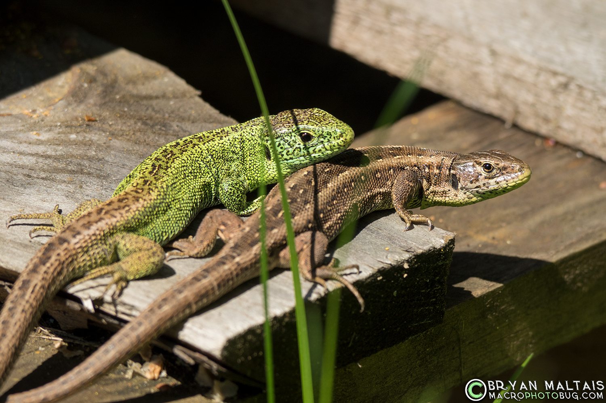 Ящерицыпопугаи
Попугаевые (лат. Psittacidae) — семейство птиц отряда попугаеобразных. Включает около 330 видов. В России попугаи впервые появились, вероятно, в 1490 году: посол римского короля Максимилиана Юрий Делатор преподнёс подарки великой княгине Софье Фоминичне «птицу попагал и сукно серо». Слово попугай впервые в письменных источниках упоминается в Описи имущества Бориса Годунова в 1589 году[2
Вопреки распространённому заблуждению, что продолжительность жизни попугаев может достигать 100 лет и более, это отнюдь не так: редко, когда их возраст превышает 50 лет. Хотя есть сведения о попугаях 65—70 лет. По данным госпиталя птиц «Зеленый попугай», продолжительность жизни волнистых попугайчиков в неволе равна 12-13 годам, при этом 1 из 100 попугайчиков доживает до 16 лет, а 1 из несколько тысяч волнистых попугайчиков живёт до 18-19 лет. Также в госпитале птиц определена точно продолжительность жизни в неволе кубинских амазонов — старость у них наступает в 35 лет, а 40-летний порог жизни они практически не преодолевают.
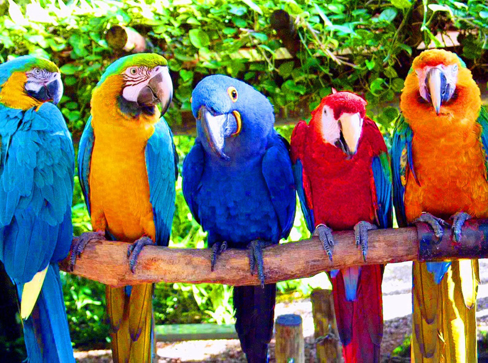 попугаихамелеон
Хамелео́ны (лат. Chamaeleonidae) — семейство ящериц, приспособленных к древесному образу жизни, способных менять окраску тела.
Большинство видов имеет длину тела 30 см, наиболее крупные достигают 50—60 см, самые мелкие — 3—5 см. Голова шлемообразная, с заметно приподнятой затылочной областью. Часто украшена более или менее выпуклыми гребнями, буграми или вытянутыми, заострёнными рогами. В большинстве случаев все эти образования развиты у самцов, а у самок носят зачаточные формы
Ноги длинные, своеобразно приспособленные к лазанью. Пальцы срастаются в две противополагающиеся друг другу группы по 2 и 3 и имеют вид «клешней», которые могут плотно обхватывать ветви дерева. Хвост толстый у основания, постепенно сужается к концу, может спирально закручиваться вниз и обвиваться вокруг ветвей. Данной способностью обладают большинство представителей семейства за исключением сравнительно небольшого числа видов с коротким хвостом. Хамелеоны имеют необычные органы зрения. Веки животных сросшиеся, постоянно покрывающие глаз, но имеющие отверстие для зрачка. Движения левого и правого глаза могут осуществляться несогласованно, что имеет важное значение при ловле насекомых, но перед атакой хамелеон поворачивает оба глаза на добычу. Хамелеоны обладают круговым обзором.
Во время охоты хамелеоны, как правило, длительное время сидят на ветвях деревьев. Тело животного при этом остаётся неподвижным, а глаза постоянно двигаются (но иногда хамелеоны медленно подкрадываются к добыче). Насекомых ловят языком с ловчей присоской на конце, процесс выбрасывания которого длится около 1/20 секунды, а вместе с возвратом в исходное положение — не более полусекунды. За три секунды хамелеон может распознать и поймать до четырёх насекомых[3]. В «нерабочем» положении язык удерживается специальной косточкой в нижней челюсти. Иногда добыча оказывается слишком тяжёлой, чтобы удержаться языком; в последующие разы хамелеон хватает добычу такого размера ртом.
Широкую известность имеет свойственная всем хамелеонам способность изменять окраску и рисунок тела. Изменение окраски связано с особенностями строения кожного покрова. В наружном волокнистом и более глубоком слое кожи находятся особые разветвлённые клетки — хроматофоры, содержащие зёрна различных пигментов: чёрного, тёмно-коричневого, красноватого и жёлтого цветов. При сокращении отростков хроматофоров зёрна пигментов перераспределяются, и их наибольшая концентрация приходится на центр клеток, при этом кожа самой ящерицы приобретает беловатый или жёлтый окрас. При сосредоточивании тёмного пигмента в волокнистом слое кожи она, соответственно, приобретает тёмную окраску. Сочетание пигментов обоих слоёв приводит к появлению различных цветовых оттенков. Зелёные цвета окраски появляются дополнительно в результате преломления лучей света в поверхностном слое кожи, содержащем кристаллы гуанина.
В результате таких особенностей окраска хамелеонов может быстро изменяться от светлой — беловатой и оранжевой, через жёлтую и зелёную до пурпурной, а затем — полностью чёрной или тёмно-коричневой. Данные изменения окраски могут происходить как на всём теле животного, так и на его отдельных участках, сопровождаясь появлением и исчезновением различного рода полос и пятен.
В результате таких особенностей окраска хамелеонов может быстро изменяться от светлой — беловатой и оранжевой, через жёлтую и зелёную до пурпурной, а затем — полностью чёрной или тёмно-коричневой. Данные изменения окраски могут происходить как на всём теле животного, так и на его отдельных участках, сопровождаясь появлением и исчезновением различного рода полос и пятен.
Данные изменения окраски тела хамелеонов происходят под действием как внешних раздражителей — температуры, света и влажности, так и в результате голода, жажды, испуга, раздражения и т. д. Доступные хамелеону цветовые вариации зависят от преимущественной среды обитания, характерной для вида. Хамелеоны ведут дневной образ жизни, так как во сне они теряют контроль над цветом кожи, бледнеют и становятся заметными для хищников.
Часто изменения окраски могут сочетаться с демонстрацией угрозы, направленной на отпугивание врага. Быстрые изменения окраски также наблюдаются у самцов в период размножения.
Традиционно считалось, что хамелеоны изменяют окраску тела для мимикрии под окружающую их растительность. Исследуя пёстрого горного хамелеона (род Bradypodion), обитающего в Северной Африке, учёные пришли к выводу, что хамелеоны используют изменение цвета в первую очередь для коммуникации с представителями своего вида, а не для защиты от хищников.
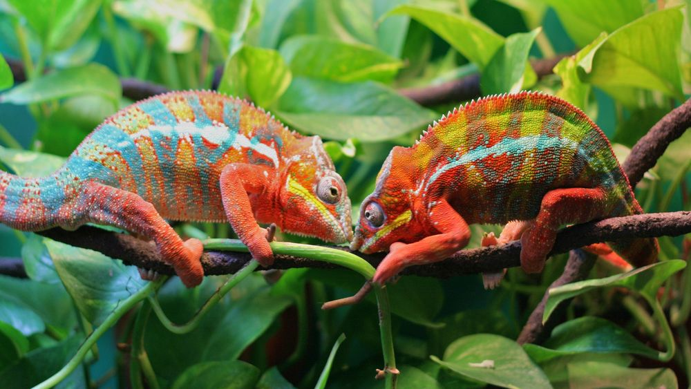 хамелеонворобьи
Домо́вый воробе́й (лат. Passer domesticus) — наиболее распространённый вид из рода настоящих воробьёв (Passer) семейства воробьиных (Passeridae). Одна из самых известных птиц, обитающая по соседству с жилищем человека (отсюда её видовое название «домовый») и хорошо узнаваемая как по внешнему виду, так и по характерному чириканью.
Длина тела составляет 14—18 см, масса — 21—37 г. Общая окраска оперения — сверху коричневато-бурая, ржавчинного цвета с чёрными пятнами, снизу беловатая или серая. Щёки белые, ушная область бледно-серая. Крылья с желтовато-белой поперечной полосой. Самец отличается от самки наличием большого чёрного пятна («галстука»), охватывающего подбородок, горло, зоб и верхнюю часть груди, а также тёмно-серым (а не тёмно-бурым) верхом головы. У самки голова и горло серые, а над глазом имеется бледная серо-жёлтая полоса.
Распространение Прежде область обитания домового воробья ограничивалась Северной Европой. Впоследствии широко распространился в Европе и Азии (за исключением Арктики, северо-восточных, юго-восточных и центральных районов Азии), а также в Северной и Восточной Африке, Сенегале, Малой Азии, на Аравийском полуострове и острове Ява. В Италии обитает близкий вид — итальянский воробей (Passer italiae). Начиная с XX века был завезён в разные страны, широко там расселился и в настоящее время, кроме указанных выше мест, обитает также в Южной Африке, Австралии, Новой Зеландии, Северной и Южной Америке и на многих островах].
волк
Евра́зия — крупнейший из шести материков на Земле. Площадь — 53,6 млн км², что составляет 36 % площади суши. Население — 5,349 млрд чел. (1 июл. 2019 г.), что составляет более 70 % населения планеты.
Первоначально крупнейшему континенту мира давались различные названия. Александр Гумбольдт использовал название «Азия» для всей Евразии. Карл Густав Ройшле[en] в 1858 году в книге «Справочник по географии» (Handbuch der Geographie) использовал термин «Двойной континент Азия-Европа» (Doppelerdtheil Asien-Europa). Термин «Евразия» впервые употребил геолог Эдуард Зюсс в 1880-х годах.
Континент расположен в Северном полушарии между примерно 9° з. д. и 169° з. д., при этом часть островов Евразии находится в Южном полушарии. Бо́льшая часть континентальной Евразии лежит в Восточном полушарии, хотя крайние западная и восточная оконечности материка находятся в Западном полушарии.
Континент содержит две части света: Европу и Азию. Линию границы между Европой и Азией чаще всего проводят по восточным склонам Уральских гор, реке Урал, реке Эмба, северо - западному побережью Каспийского моря, реке Кума, Кумо-Манычской впадине[7], реке Маныч, восточному побережью Чёрного моря, южному побережью Чёрного моря, проливу Босфор, Мраморному морю, проливу Дарданеллы, Эгейскому и Средиземному морям. Это условное разделение сложилось исторически, следствием чего является варьирование определения границ Европы и Азии, вплоть до включения в Европу всего бассейна Каспийского моря, Малой Азии, Леванта, а также Южного Ирана, территорий бассейна рек Тигр и Евфрат, Аравии и Синая, при том, что последний по политическим причинам может быть включён в состав Африки.
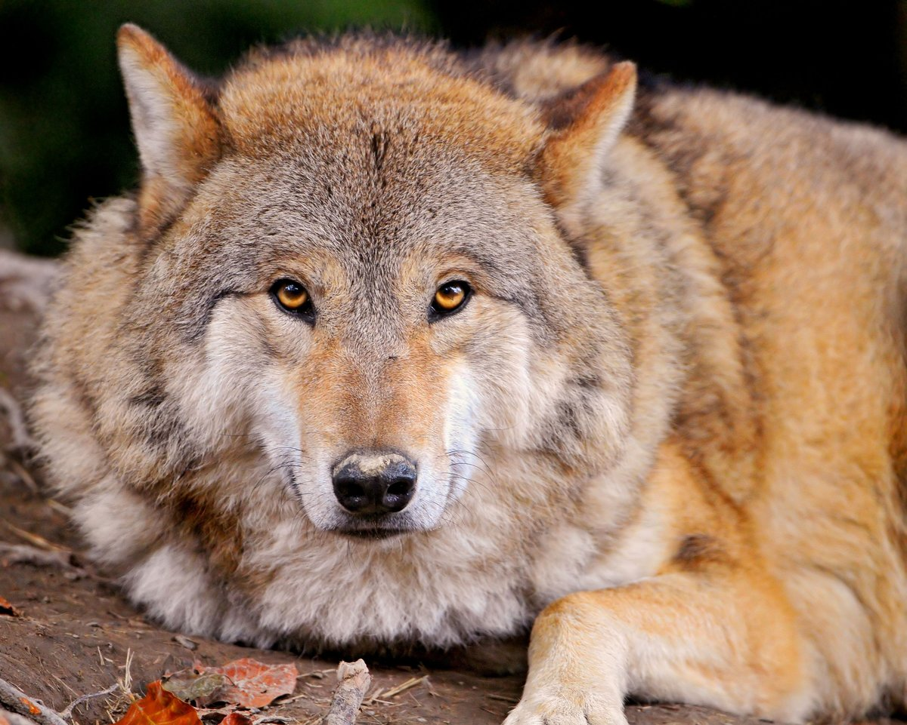 волклиса
Лисица, лиса, обыкнове́нная лиси́ца или ры́жая лиси́ца (лат. Vulpes vulpes) — хищное млекопитающее семейства псовых, наиболее распространённый и самый крупный вид рода лисиц. Длина тела 60—90 см, хвоста — 40—60 см, масса — 6—10 кг.
Лисица распространена весьма широко: на всей территории Европы, Северной Африки (Египет, Алжир, Марокко, северный Тунис), большей части Азии (вплоть до северной Индии, южного Китая и Индокитая), в Северной Америке от арктической зоны до северного побережья Мексиканского залива. Лисица была акклиматизирована в Австралии и распространилась по всему континенту, за исключением некоторых северных районов с влажным субэкваториальным климатом. Ранее считалось, что в Америке живёт отдельный вид лисиц, но в последнее время его рассматривают как подвид рыжей лисицы
Окраска и размеры лисиц различны в разных местностях; всего насчитывают 40—50 подвидов, не учитывая более мелких форм. В общем, при продвижении на север лисицы становятся более крупными и светлыми, на юг — мелкими и более тускло окрашенными. В северных районах и в горах также чаще встречаются чёрно-бурые и другие меланистические формы окраски лисиц. Наиболее распространённый окрас лисы: ярко-рыжая спина, белое брюхо, тёмные лапы. Часто у лисиц присутствуют бурые полосы на хребте и лопатках, похожие на крест. Общие отличительные черты: тёмные уши и белый кончик хвоста. Внешне лисица представляет собой зверя среднего размера с изящным туловищем на невысоких, тонких лапах, с вытянутой мордой, острыми ушами и длинным пушистым хвостом.
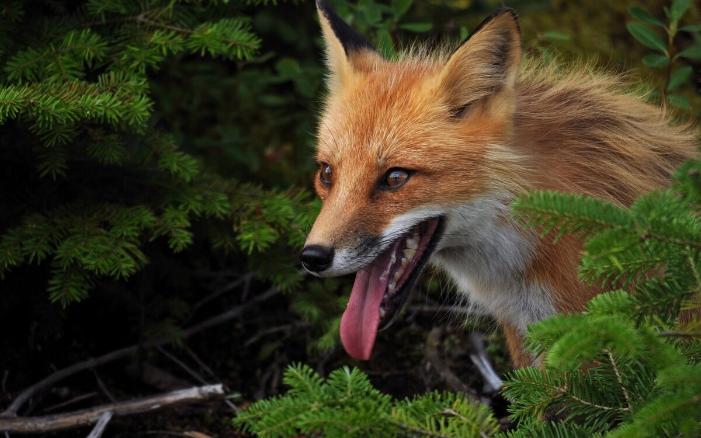 лисасобака
Соба́ка (лат. Canis lupus familiaris) — домашнее животное, одно из наиболее популярных (наряду с кошкой) животных-компаньонов.
Первоначально домашняя собака была выделена в отдельный биологический вид (лат. Canis familiaris) Линнеем в 1758 году, в 1993 году реклассифицирована Смитсоновским институтом и Американской ассоциацией териологов в подвид волка (Canis lupus). В русскоязычных письменных источниках слово «собака» в значении соответствующего животного встречается по крайней мере с 1475 года (начиная с грамоты князя Андрея Васильевича Меньшого Кириллову монастырю).
С зоологической точки зрения, собака — плацентарное млекопитающее отряда хищных семейства псовых.
Собаки известны своими способностями к обучению, любовью к игре, социальным поведением. Выведены специальные породы собак, предназначенные для различных целей: охоты, охраны, тяги гужевого транспорта и другого, а также декоративные породы (например, болонка, пудель).
Имеется несколько гипотез происхождения собаки, наиболее вероятными её предками считаются волк и некоторые виды шакалов. В суждениях учёных о предках домашней собаки присутствуют две точки зрения. Одни считают, что собаки — полифилетическая группа (происходящая от нескольких предков), другие придерживаются мнения, что все собаки произошли от одного предка (монофилетическая теория)[5][неавторитетный источник?]. Этолог Конрад Лоренц, лауреат Нобелевской премии, выдвинул в своё время теорию о происхождении собак от волков и от шакалов[6], подчёркивая диаметральные различия между их характерами и повадками.
собакикоты
Ко́шка, или дома́шняя ко́шка (лат. Félis silvéstris cátus[источник не указан 50 дней]), — домашнее животное, одно из наиболее популярных (наряду с собакой) «животных-компаньонов».
С точки зрения научной систематики, домашняя кошка — млекопитающее семейства кошачьих отряда хищных. Ранее домашнюю кошку нередко рассматривали как отдельный биологический вид. С точки зрения современной биологической систематики домашняя кошка (Felis silvestris catus) является подвидом лесной кошки (Felis silvestris).
Являясь одиночным охотником на грызунов и других мелких животных, кошка — социальное животное, использующее для общения широкий диапазон звуковых сигналов, а также феромоны и движения тела. В настоящее время в мире насчитывается около 600 млн домашних кошек, выведено около 200 пород, от длинношёрстных (персидская кошка) до лишённых шерсти (сфинксы), признанных и зарегистрированных различными фелинологическими организациями.
В русском языке слово кошка означает либо представителя биологического подвида Felis silvestris catus вообще независимо от пола, либо самку этого подвида. Самца называют кот, а детёныша кошки — котёнок (мн. ч. котя́та). Слово кошка в русском языке является диминутивом от др.-русск. слова «котъка», которое в свою очередь происходит от существительного «кот» и является родственным лат. cattus — кошка (так в поздней латыни, начиная с V века, в отличие от классического латинского felis) и близким названиям во многих языках Европы и Ближнего Востока (англ. cat, арм. k’at’u, галл. cath, ирл. catt, исп. gato, итал. gatto, рут. gyat, лезг. кац, лит. katė, нем. Katze, нуб. kadis, прусск. catto, фр. chat, эспер. kato). Первоначальный источник неизвестен, но принято считать, что во многие языки слово попало из латинского.
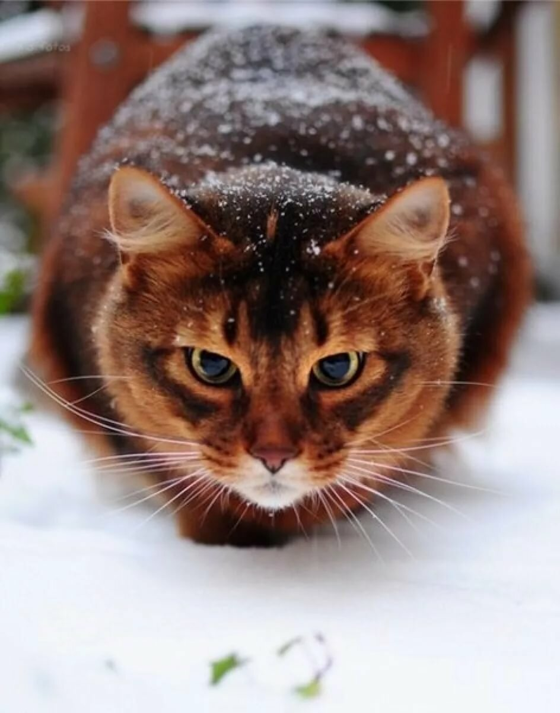 котылошадь
Домашняя лошадь (лат. Equus ferus caballus) — животное из семейства лошадиных отряда непарнокопытных, одомашненный и единственный сохранившийся подвид дикой лошади (Equus ferus), вымершей в дикой природе, за исключением небольшой популяции лошади Пржевальского. Используется человеком вплоть до настоящего времени.
Лошади (Equus) в широком смысле слова — единственный ныне живущий род семейства лошадиных, или непарнокопытных (Equidae s. Solidungula), отряда непарнокопытных (Perissodactyla). Как показывает второе название семейства, наиболее характерную особенность его составляют ноги, имеющие только один вполне развитый и одетый копытом палец. Череп вытянут и отличается относительно длинной лицевой частью. Долгое время лошади были в числе экономически наиболее важных для человека домашних животных, однако их важность упала в связи с развитием механизации. Самец лошади называется жеребцом, или (в просторечии) конём. Самка — кобылой. Кастрированный жеребец называется мерином. Детёныш лошади — жеребёнком. В природе лошадь — житель больших, открытых пространств степей или прерий, спасающаяся в случае опасности при помощи бегства. Наука, изучающая лошадей, называется иппологией. Помещение для содержания одомашненной лошади называется конюшней.
Эволюция лошадей подробно изучена по ископаемым из Америки, относящимся ко всем периодам кайнозойской эры. В течение этого времени Америка была населена разнообразными млекопитающими, похожими на лошадь, но все они вымерли до открытия Америки европейцами. Первоначальные, ещё не найденные прародители лошади, по Маршу, имели по 5 пальцев на передних и задних ногах. Древнейший известный прародитель лошади, Eohippus из нижнего эоцена, был величиной с лисицу и имел на передних ногах по 4 хорошо развитых пальца и зачатку 5, на задних по 3. Выше в эоцене находятся остатки Orohippus такой же величины, но с 4 пальцами на передних ногах и 3 на задних. В верхнем эоцене встречается Epihippus с такими же ногами, но отличающийся по зубам. На границе миоцена найден Mesohippus, величиной с овцу, с 3 развитыми и 1 зачаточным пальцем на передних и 3 на задних ногах, несколько выше — Miohippus, или Anchitherium, у которого грифельная косточка 5-го, или наружного, пальца уменьшилась до короткого зачатка. В плиоцене изобиловал Protohippus, или Hipparion, величиной с осла, с 3 пальцами на передних и задних ногах, а ещё выше, в плиоцене, появляется близкий родственник современной лошади, род Pliohippus с 1 развитым пальцем, а ещё выше — настоящие лошади (Equus), величиной с современных, которые и заканчивают эту серию.
Довольно часто у домашних лошадей встречаются уклонения, приближающие их к диким представителям семейства. Чаще всего уклонения эти, рассматриваемые как атавизм (то есть возвращение к признакам предков), касаются цвета шерсти; сюда относится, например, появление у лошадей светлой масти темной полосы вдоль спины, иногда с несколькими полосами на плечах. Некоторые считают за атавистическое явление и масть в яблоках, рассматривая крапины как остатки полосатости. Встречаются изредка более резкие и поразительные случаи атавизма — именно полидактилия, то есть появление 1 или более лишних пальцев; по Маршу, чаще всего встречается 2-й (внутренний) палец с вполне развитыми пястными или плюсневыми костями, вполне развитыми суставами пальца и копытом, которое, однако, редко касается земли. В случае развития 2 лишних пальцев по бокам среднего нога получает сходство с ногой гиппариона.
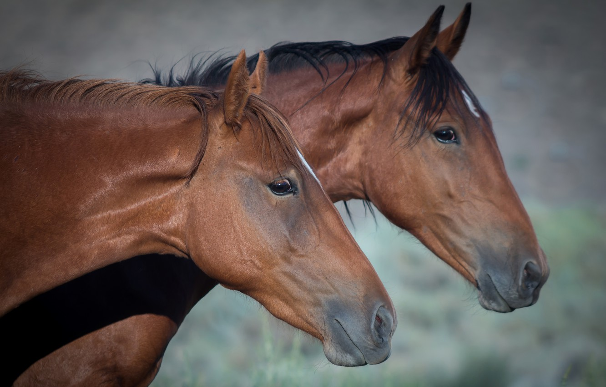 лошадь